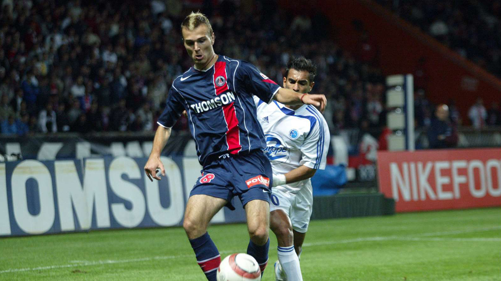

Paris SG Home Kit
2005

Embarking on an exhilarating journey to the enchanting city of Paris, my visit transcended typical tourist excursions—it was a pilgrimage for a football enthusiast. Navigating the iconic streets, my destination was clear: the Parc des Princes, the esteemed home of Paris Saint-Germain. The anticipation soared as I approached the stadium, a bastion of footballing fervor. A stop at the team's merchandise hub unveiled the epitome of Parisian football chic—the PSG kit. The navy blue jersey, adorned with the club's crest, spoke volumes about the city's footballing elegance. Wearing the PSG kit was not just an acknowledgment of my support; it was a symbolic embrace of the cosmopolitan charm and footballing prowess associated with Paris. The match itself was a spectacle, with every cheer echoing the spirit of a city that exudes art, culture, and now, football mastery. The PSG kit, now a cherished keepsake, serves as a tangible reminder of the vibrant journey through the heart of Parisian football, where the allure of the city seamlessly intertwined with the passion encapsulated in the fabric of that iconic jersey.